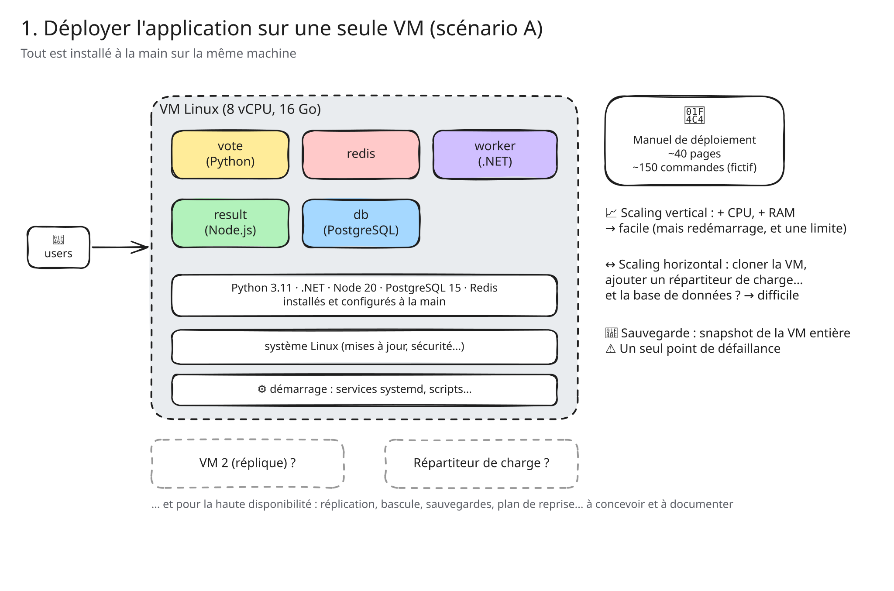
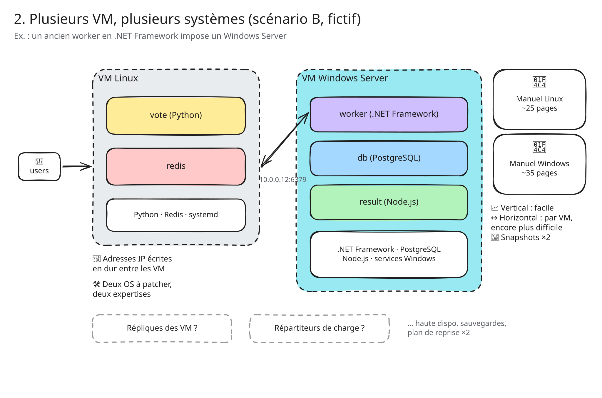
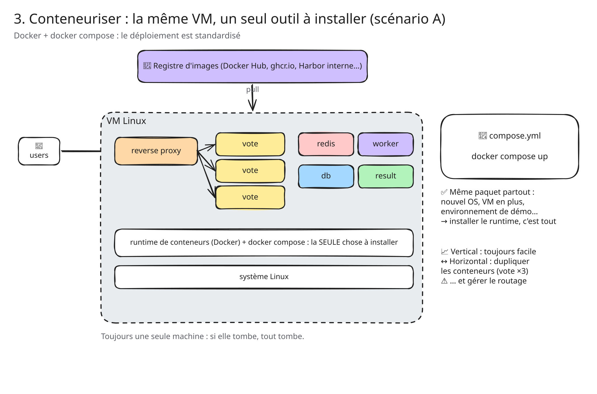
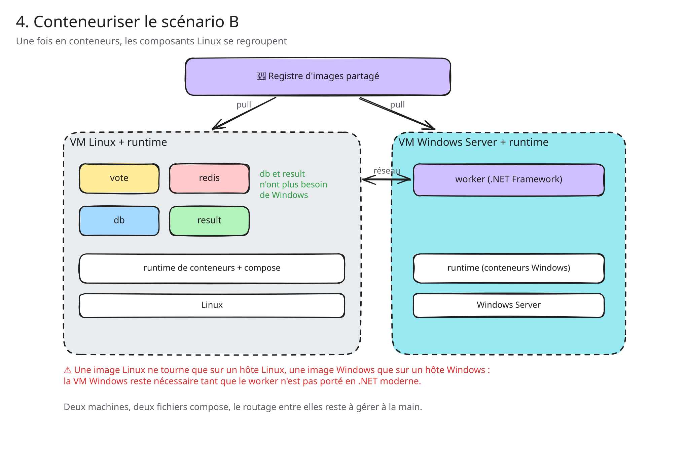
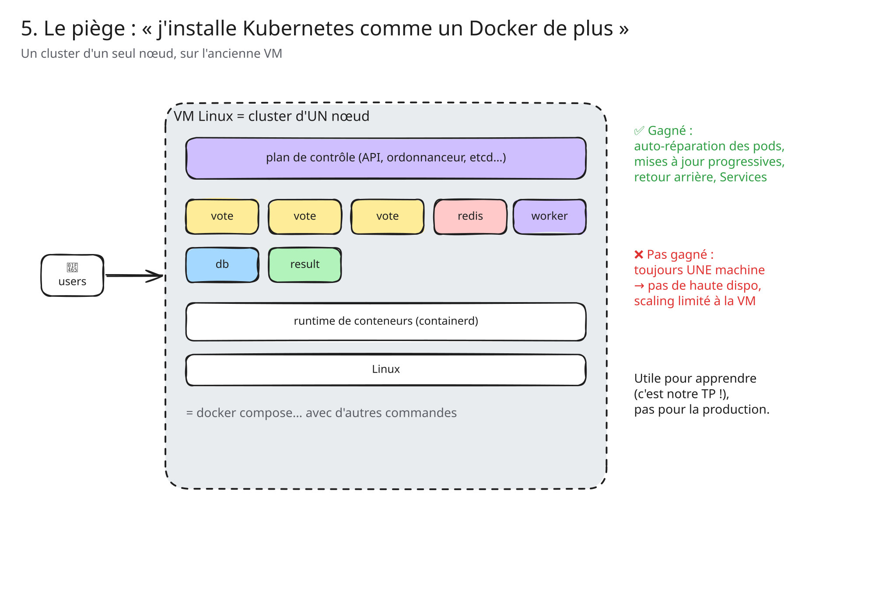
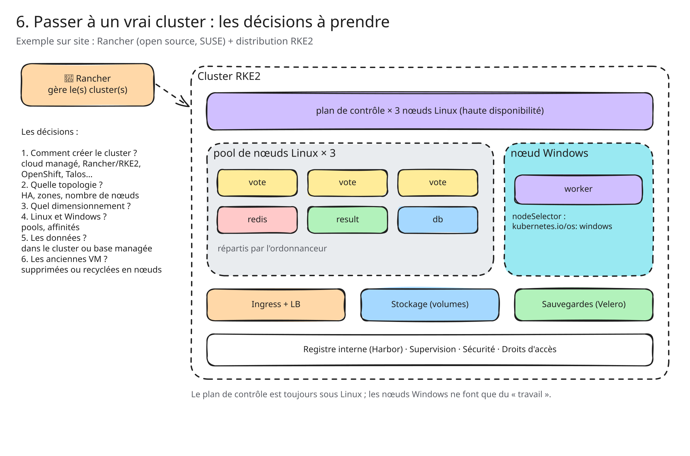
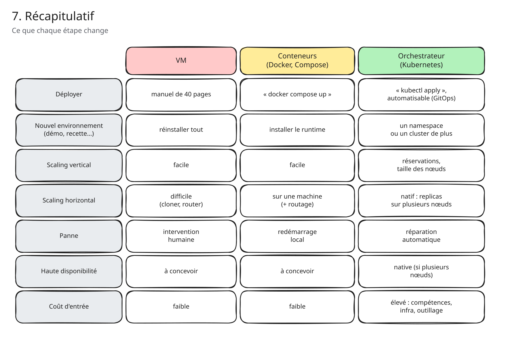
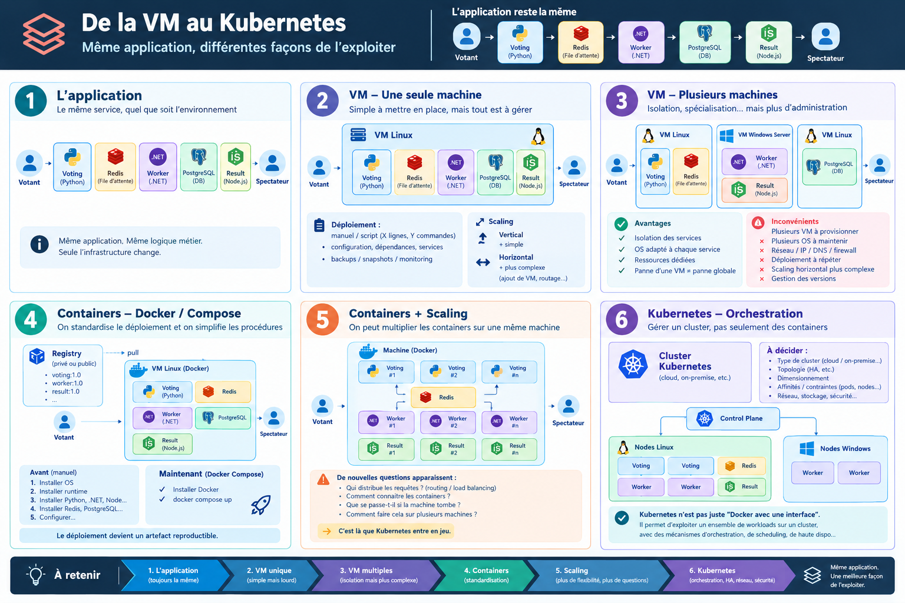

Idées infra · jour 1
De la VM à l'orchestrateur
Déployer la même application de vote, trois fois
- Sur des machines virtuelles (scénarios A et B)
- Avec des conteneurs
- Avec un orchestrateur







